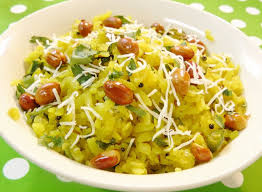
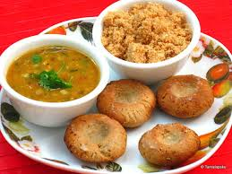
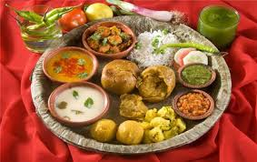
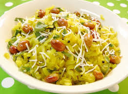
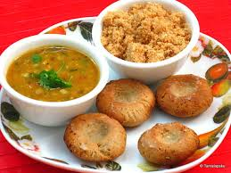
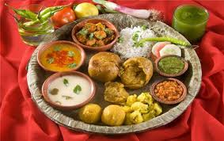

The cuisine in Madhya Pradesh varies regionally. Wheat and meat are common in the North and West of the state, while the wetter South and East are dominated by rice and fish. Milk is a common ingredient in Gwalior and Indore. The street food of Indore is renowned, with shops that have been active for generations. Bhopal is known for meat and fish dishes such as rogan josh, korma, qeema, biryani, pilaf and kebabs. There is a street named "Chatori Gali" in old Bhopal where one can find traditional Muslim non-vegetarian fare like Paya Soup, Bun Kabab, and Nalli-Nihari as some of the specialties. Dal bafla is a common meal in the region and can be easily found in Indore and other nearby regions, consisting of a steamed and grilled wheat cake dunked in rich ghee, which is eaten with daal and ladoos. The culinary specialty of the Malwa and Indore regions of central Madhya Pradesh is poha (flattened rice); usually eaten at breakfast with jalebi. Beverages in the region include lassi, beer, rum and sugarcane juice. A local liquor is distilled from the flowers of the mahua tree. Date palm toddy is also popular. In tribal regions, a popular drink is the sap of the sulfi tree, which may be alcoholic if it has gone through fermentation.